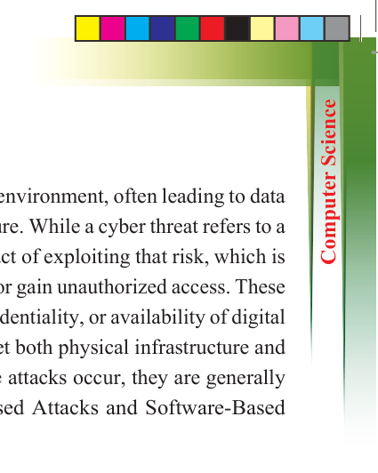
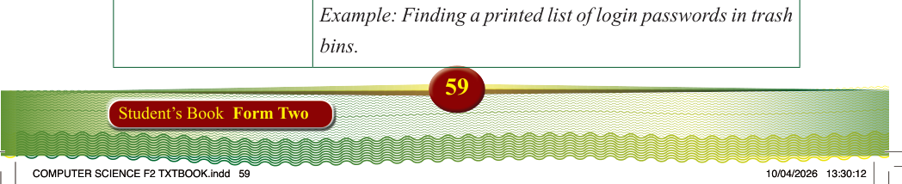

Types of cyber attacks
Cyberattacks pose a serious risk in today’s digital environment, often leading to data
theft, service disruptions, or even total system failure. While a cyber threat refers to a
potential security risk, a cyberattack is the actual act of exploiting that risk, which is
usually by malicious actors seeking to cause harm or gain unauthorized access. These
deliberate attempts compromise the integrity, confidentiality, or availability of digital
systems, data, or networks. Cyberattacks can target both physical infrastructure and software systems. To better understand how these attacks occur, they are generally
grouped into two main categories: Physical-Based Attacks and Software-Based
Attacks.
Physical-based attacks
Physical-based attacks involve gaining physical access to devices or equipment to
steal data or install malicious tools. Table 2.6 provides examples of common physical
attacks.
Table 2.6: Examples of common physical cyber attacks
Attack type
Description and example
Device theft
Involves stealing computers, phones, or storage devices
to access sensitive data. Example: A laptop with student records is stolen from an office.
Keylogging devices
Installing a device that records every keystroke. Example:
A keylogger attached to a shared library computer captures
login credentials.
Shoulder surfing
Watching over someone’s shoulder to learn their credentials.
Example: A student sees a teacher typing in their password.
Power interference attacks
Using electromagnetic signals or power analysis to gather
information. Example: An attacker reads typed data based
on electrical fluctuations.
Dumpster diving
Searching discarded materials for sensitive information.
Example: Finding a printed list of login passwords in trash
bins.